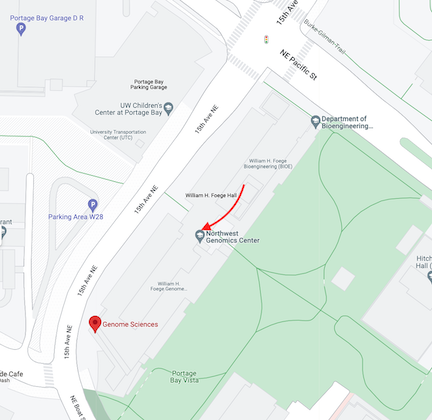
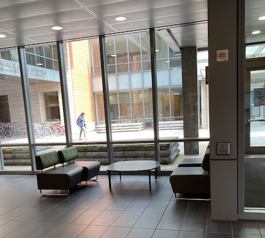

Reaching the Feder lab
We're located in S103 in the south half of the Foege building,
opposite from Bioengineering. The lab space is restricted access, so here are
a few instructions that help me figure out where to meet you.
There are multiple entrances to the building, but the easiest place to
enter is the main entrance under the skybridge shown in the red arrow here:

If you have a Husky Card, you should be able to get through the main
door. Just to the right of the door when you
enter, you should see a few chairs and a table, which is a good place
to wait:

If you don't have a Husky Card, I'll plan to meet you outside the main
door.